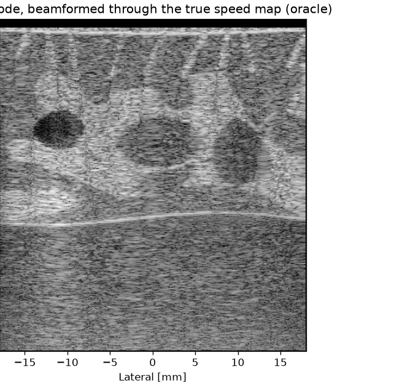
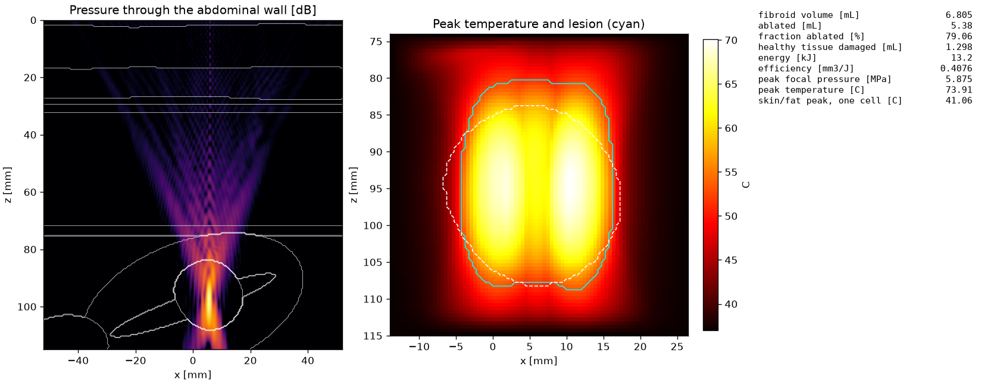
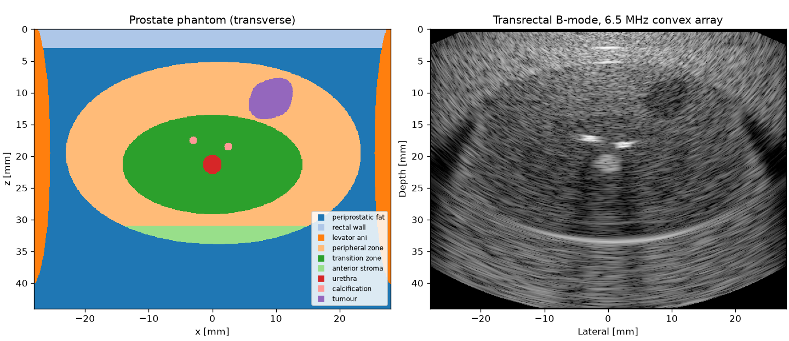
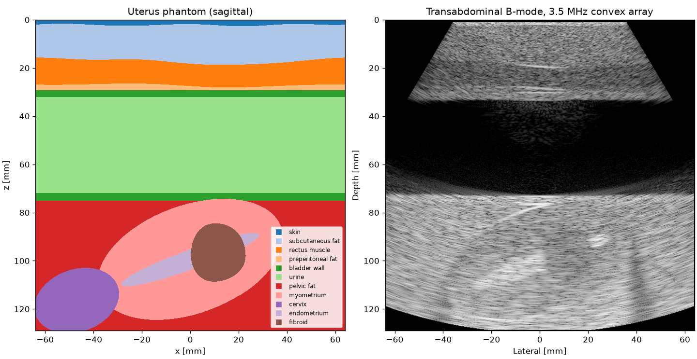
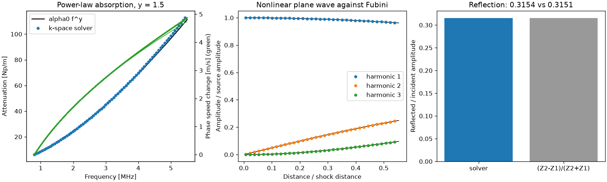

SonoSK
An open-source Python library for medical ultrasound. Design a probe, place it on an anatomical phantom of the breast, prostate, uterus or face, and get the B-mode image, or plan a focused ultrasound treatment and see the temperature, the thermal dose and the lesion left behind. Every tissue value comes with its published source.

What it simulates
- Transducers
- Flat and focused elements, annular arrays, linear and phased arrays with an elevation lens, convex and endocavity arrays, matrix arrays, line-focus sources and spherical HIFU phased arrays.
- Propagation
- Rayleigh integral, angular spectrum, the hybrid angular spectrum method through layered tissue, pulsed fields, and a k-space pseudospectral full-wave solver for heterogeneous, absorbing and nonlinear media in 1, 2 and 3 dimensions.
- Tissues and anatomy
- A tissue property database with the reference of every value, and phantoms of the breast, prostate, uterus and face with cysts, fibroadenomas, carcinomas, tumours, fibroids and calcifications.
- Imaging
- Echoes through heterogeneous tissue with aberration, shadowing and enhancement, frequency-dependent attenuation, plane, diverging and focused transmits, compounding, sound-speed-aware beamforming, sector images and full-wave pulse-echo imaging.
- Therapy
- Heat sources with harmonics, the Pennes bioheat equation, CEM43 dose and Arrhenius damage, perfusion shutdown, treatment plans with many sonications, and the ablated and residual target.
- Probe design
- Mason model of a piezoelectric element with backing and matching layers; its pulse goes straight into the image.
- Safety and quality
- Mechanical index, derated intensities and FDA limits; resolution, contrast, CNR, gCNR and speckle statistics.
Figures made with SonoSK




A first simulation
import numpy as np
import sonosk as sk
from sonosk import imaging, organs, phantom, transducer
grid = sk.Grid.centered((401, 401), 0.1e-3, depth_start=0.0)
breast = organs.breast(grid, lesions=[organs.Carcinoma((5e-3, 0, 15e-3))], rng=1)
pos, amp = phantom.scatterers(breast.medium, density=50, rng=1)
probe = transducer.linear_array(128, pitch=0.3e-3, height=4e-3)
pulse = imaging.Pulse(7.5e6, 0.65)
tx = imaging.Transmit.plane(0.0)
rf, fs = imaging.simulate(probe, tx, pos, amp, pulse, medium=breast.medium)
x, z = np.arange(-18e-3, 18e-3, 8e-5), np.arange(1e-3, 39e-3, 8e-5)
image = imaging.beamform(rf, fs, probe, tx, x, z, medium=breast.medium)The getting started page continues from here to a phantom, an image, its quality measures and a heating exposure, and on to anatomical phantoms. Each solver is checked against a closed-form result or an independent method; the comparisons are on the validation page, the convergence studies and a comparison with k-Wave on the benchmarks page, and what the models assume and leave out on the scope and limits page. What comes next is on the roadmap.
Citing SonoSK
Kooklan S. SonoSK: medical ultrasound simulation in Python. Zenodo, 2026. doi:10.5281/zenodo.23517377
This DOI always resolves to the latest release, and every release has its own DOI as well. BibTeX and the DOI of each version are on the citing page.